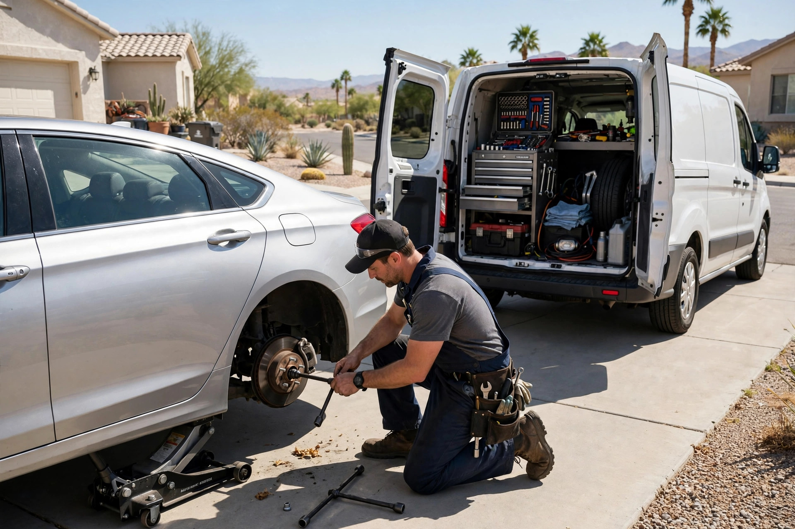
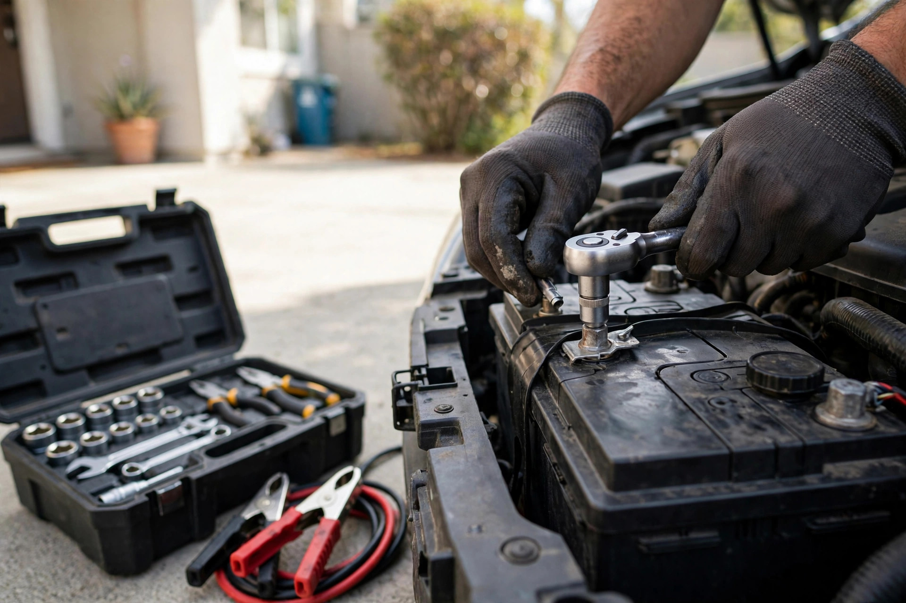
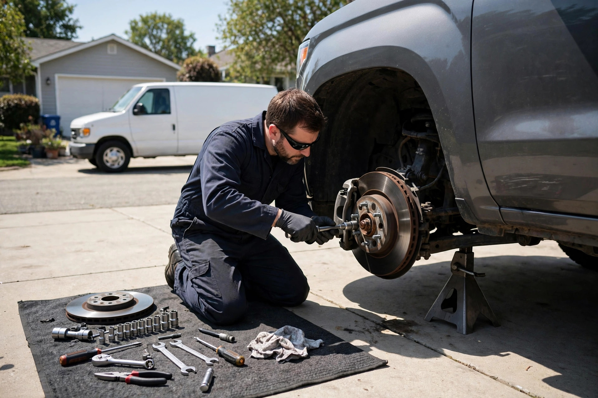

Brake Service
Pads, rotors and full brake inspections done in your driveway — your stopping power, handled on-site.
Phoenix, AZ · Mobile mechanic — we come to you
Skip the shop and the waiting room. We bring the tools, the parts and the expertise to your home or office — repair done at your curb.
What we do
Pads, rotors and full brake inspections done in your driveway — your stopping power, handled on-site.
Dead battery? We test it on the spot and install a fresh one at your curb — no jump-start roulette.
Check-engine light or mystery noise? We bring the scan tools to you and find the real problem.
Oil changes, coolant, transmission fluid and more — routine maintenance without the shop trip.
Spark plugs, filters, belts and hoses — keep your car running right with maintenance at your door.
Buying a used car in Phoenix? We inspect it wherever it's parked, before you hand over the money.

Why choose us
We keep it simple: a straight answer about what's wrong, a price confirmed before we lift a wrench, and work done right where your car already is. No tow truck, no waiting room.
On the job


Come say hello
Good to know
You call (623) 282-2510 and tell us what's wrong with your car. We drive to your home, office or wherever the car is, diagnose it, confirm the price, and do the work right there.
Most common jobs: brakes, batteries, oil changes, diagnostics, tune-ups, belts, hoses and pre-purchase inspections. If a job needs a lift or heavy equipment, we'll tell you honestly.
Just the keys and a reasonably flat place to park. We bring our own tools, parts and fluids.
We're based at 44 W Monroe St in downtown Phoenix and serve the surrounding Valley area. Call us and we'll confirm we can reach you.
Get in touch